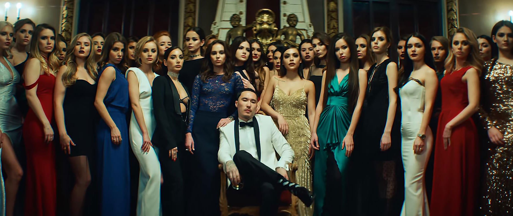
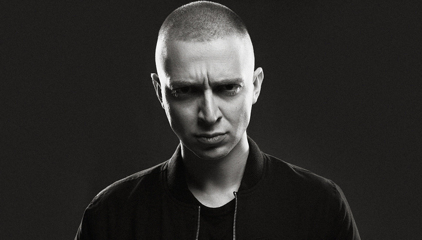

СКРИПТОНИТ: ДВА ГОДА В СТАТУСЕ РЭП-ЗВЕЗДЫ
В своём дебютном клипе Скриптонит пытался разыграть, в общем-то, битую к тому моменту карту. Тема выживания в суровых урбанистических реалиях была актуальна для русского хип-хопа в 90-е и первую половину нулевых. Постулат о том, что провинция – одно сплошное гетто, уже все давно поняли и перестали по этому поводу рефлексировать. Артисты новой волны делали акцент на том, какие возможности у них появились с приходом путинской стабильности. При грамотном подходе увлечение рэпом стало прибыльным практически с самого старта.
На таких радостях риторика стремящихся выбиться в люди «ноунеймов» моментально сменилась на повествование о вечеринках в клубах, безудержных половых связях, наркоте, лихих бабках, которые непонятно откуда взялись в огромном избытке при столь юном возрасте. Так что все разговоры про «прохаванную» на дне жизнь пропускались и были уже никому неинтересны. Несмотря на несовременный подход, в Скриптоните явно проглядывался большой талант и перспектива. Благодаря «VBVVCTND» казахского самородка заметил Баста и предложил стать подписантом лейбла «Газгольдер».
В первую очередь в новичке удивляло его оригинальное прозвище – Скриптонит. Очевидно, что уши этого ника растут из саги про Супермена. Главная отсылка к сверхчеловеку, это, конечно же, татуировка в виде всем знакомой «S» на груди. Кроме этого, слово «криптонит» означает вымышленное кристаллическое радиоактивное вещество, которое является единственной немагической слабостью Супермена. По сути «криптонит» – это разновидность знаменитой «ахиллесовой пяты».
Получается, сценический псевдоним Адиля можно объяснить как попытку создания антигероя, который способен устранить, подавить или даже убить любого сверхчеловека. Если эта мысль соответствует задумке рэпера, то это очень удачный пример аллюзии и интересный творческий ход.

В марте 2015 года вышел клип на самый громкий хит с совместной пластинки Басты и Смоки Мо «Лёд». Участие в нём Скриптонита придало песне дополнительный колорит, а для самого молодого подписанта фит со старшими товарищами стал своеобразным официальным представлением перед фанатами лейбла «Газгольдер». Аналогичным составом рэперы собрались для съёмок ещё одной совместки «Миллионер из трущоб», которая хоть и содержала в себе массу спецэффектов, однако уровня славы «Льда» так и не достигла.
Заручившись поддержкой коллег по цеху и набрав узнаваемости с помощью дуэтов с первыми лицами лейбла, Скриптонит спустя два года после выхода «VBVVCTND» выпустил свой дебютный альбом «Дом с нормальными явлениями».
Первый сольник – это всегда лебединая песня любого исполнителя, апогей внимания, которого больше не будет у последующих альбомов. Поэтому так важно думать на несколько шагов вперед о том, как именно распорядиться этим капиталом. Однако выход альбома Скрипа заставил всех забыть даже о таких непреложных истинах. Никто не мог и предполагать, какой эффект произведёт на российский хип-хоп сольник казахстанского новичка.
Вспоминая и сравнивая его трэки и до, и уже на «Газгольдере», рэпер выдал абсолютно неожиданный материал, который никто и не думал услышать на его первой пластинке.
Альбом стал настоящим Клондайком мемом, тэгов, стэйтментов, крылатых фраз и многих-многих других элементов современного российского рэп-фольклора. Даже спустя два года, большинство стереотипов и образов, связанных со Скриптонитом, берут своё начало именно на этом диске. Примечательно, что, несмотря на обилие запоминающихся трэков с альбома, экранизации удостоились только два – «Притон» и «Стиль».
Первый знаменателен тем, что стоп-кадр из клипа послужил обложкой альбома. Сама песня была выбрана для экранизации как наиболее собирательный трэк, способный максимально быстро и доходчиво показать стилевое разнообразие всего диска. Скриптонит здесь и поёт, и читает, а звуковая дорожка вобрала в себя огромную палитру музыкальных инструментов и жанрового разнообразия.
Однако на «ДСНЯ» была ещё одна столь же яркая и разносторонняя песня, как и «Притон». Речь о реквиеме «Вечеринка». Глубокомысленный слушатель может найти в этом трэке намёки на то, что эта самая вечеринка является ничем иным, как похоронами исполнителя. Подумайте сами, где ещё могут собраться «все, кого он любил», кроме дня рождения.
Однако для этого праздника обычно принято использовать более мажорное звуковое сопровождение. Несмотря на «хитовость» этой песни, её решили попридержать и использовать для промо уже второго сольного альбома Скриптонита «Праздник на улице 36». Казалось, что сам артист не особо хотел выпускать этот материал, считая его «не тем, что должно было выйти». Так или иначе, но диск вызвал уже гораздо меньше хайпа, чем первый альбом. Привычного вороха бесконечных мемов, которым изобиловал «ДСНЯ», здесь уже не было.
Так чем же так полюбился Скриптонит слушателям? Почему его продолжают упоминать в списках лучших рэперов России, хотя он крайне редко выпускает новый материал? Неужели его немногочисленные песни были настолько хороши, что позволяют ему даже спустя долгое время не просто оставаться на плаву, но и занимать лидирующее место в индустрии?
Огромным плюсом творчества рэпера является именно сама музыка, в написании которой он очень сильно преуспел. Скриптонит начал зарабатывать свои первые деньги именно с помощью ремесла битодела. Когда человек очень долго сочиняет музыку, то через какое-то время он начинает чувствовать, какой текст и какая подача могут подойти для той или иной мелодии. Неизбежно в голове рождается некий образ, к которому уже придумывается словесное сопровождение.
Хорошо это или плохо, но в хип-хопе всё же первична музыка. Так работают 90% исполнителей. Мало кто может написать сначала текст, а потом перенести его на бит. Другими словами, проще послушав музыку, написать слова, чем послушав слова, написать музыку.

Благодаря тому, что Скрип очень долго писал музло, к моменту своей работы в качестве сольного исполнителя он уже прекрасно знал, какой бит ему нужно записать под то или иное настроение. Он уже видел насквозь все эти трэки. Адиль давно нащупал все оттенки безнадеги, печали, меланхолии, хандры и прочих переживаний. Именно поэтому трэки Скриптонита затягивают слушателя в болото своей вязкостью и отсутствием чётких границ.
Всё настолько размыто, что в этой лениво текущей реке буквально не за что зацепиться. Это глубокий запой, из которого невозможно выйти. Повтор за повтором одной из той же смазанной картинки, на которой человек закапывает себя все глубже и глубже.
Голосовой chopped&screwed эффект также добавляет картине происходящего именно тот фон, который здесь уместен. Такой искаженный голос слышит человек, которого обули чем-то по голове или если он находится под барбитурой. Постоянное пребывание в таком состояние обеспечивает глубокую депрессию, алкоголизм, а то и более тяжёлую зависимость. Мало кто из современных рэперов может похвастаться умением погружать своих слушателей в подобные состояния. В том числе и по этой причине Скриптонит стал ярчайшим пятном на общем фоне российского рэпа. Адиль действительно порвал шаблоны, как бы высокопарно это не звучало.
Группа – это отличная возможность экспериментировать с творчеством. В её составе можно пробовать всё, что хочешь. Если эксперимент будет удачным – берем на заметку и делаем максимально похожее сольно, если не удался – забываем и «отмазываемся», что это сайд проект или что во всём виноваты коллеги.
Также в рэпе всегда нужна команда: помелькать в клипе, «подпеть», когда нет нормальных гостей на фитах, потусить на концерте. Без crew в хип-хопе никуда. Рэп-игра не терпит одиночек. Ведь именно наличие комьюнити позволяет заявлять в своих трэках что-то вроде того, что «мои пацаны со мной, мои люди, моя банда, флейва и т.д.»
Зачастую для группы характерен один неприятный момент – все участники коллектива начинают невольно копировать своего лидера, становясь клонами-Смитами из Матрицы. Ещё один признак группы – это постоянная ротация её участников, которая повышает ценность первого лица. Подобные процессы, хоть и в миниатюре мы наблюдаем в группе Jillzay. Изначально планировалось, что второй альбом Скриптонита выйдет в один день с дебютным альбомом Jillzay. Однако в октябре 2016 вышел лишь «718 Jungle», а «Праздник на улице 36» – в мае этого года.
Один раздвинул границы жанра и показал, что можно найти новые мотивы в уже давно полюбившейся миллионами людей музыке, второй – показал не только то, что русский рэп может быть умным и интеллектуальным, а, что ещё более важно, насколько он может быть интересным, пробивным и живучим.
С этих точек зрения в одночасье все посмотрели на рэп совсем под другими углами. Пресловутый переворот игры после выхода «Горгорода» и «ДСНЯ» – это огромный шаг для рэпа в его русскоязычном сегменте. Во многом все последующие успехи Версуса так или иначе имеют точку отчёта в этом моменте, несмотря на то, что уже за полгода до выхода альбомов баттл Окси с Джоннибоем набрал десятки миллионов просмотров.
